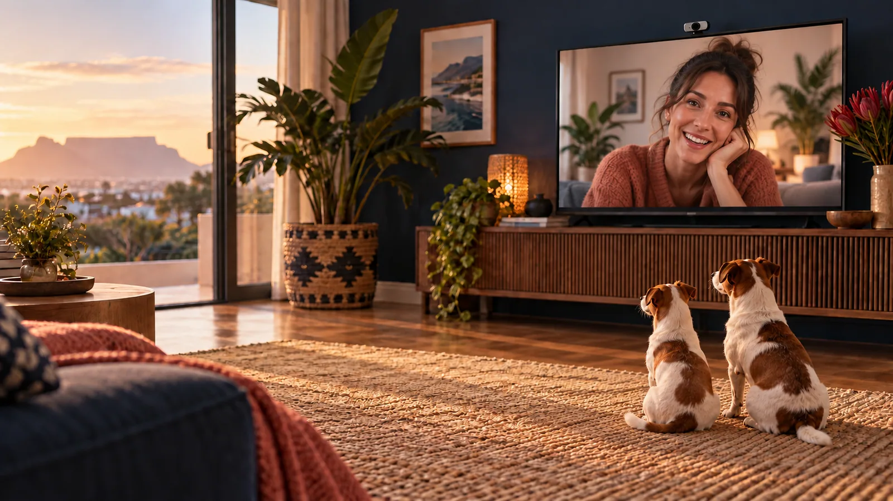
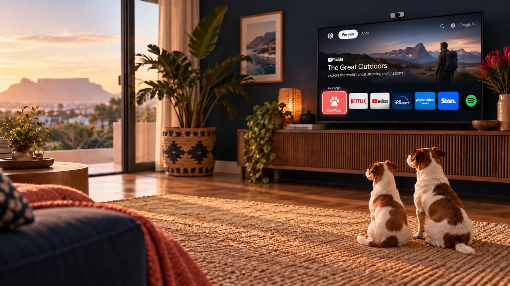
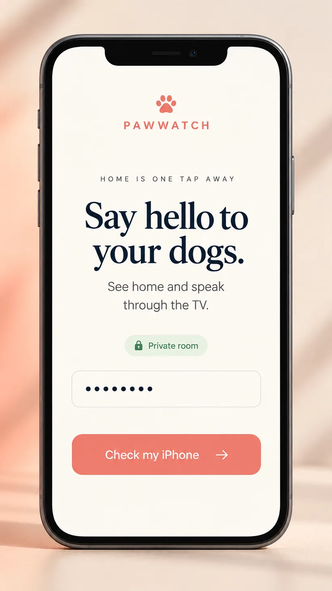
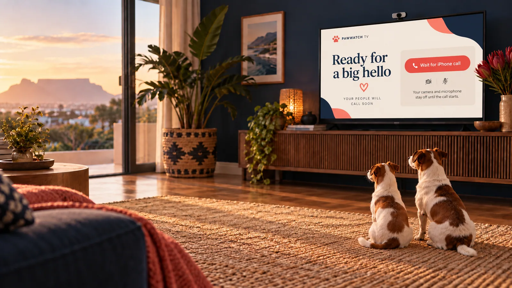
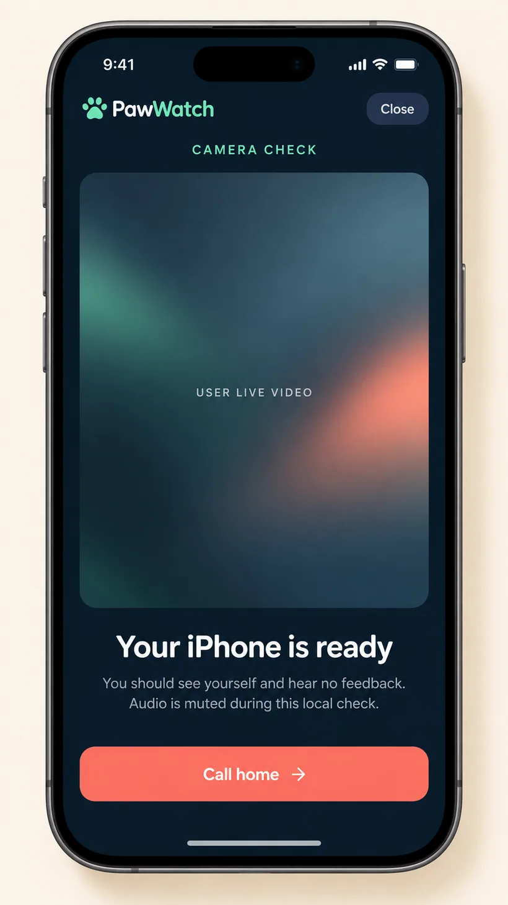
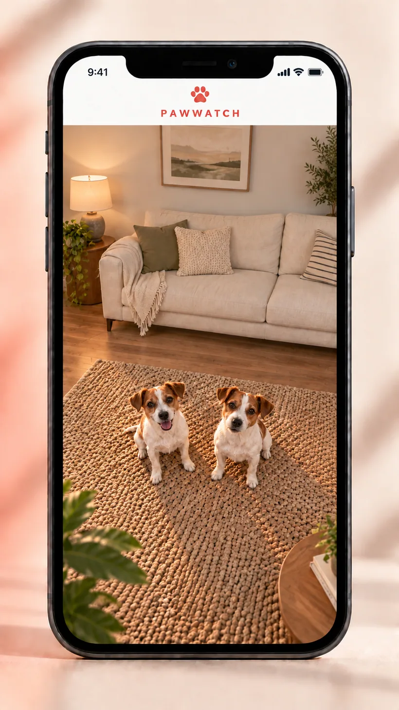

TV at home
A custom Android TV application works with a USB webcam and the television speakers.

PERSONAL BUILD PRIVATE USE
PawWatch connects an iPhone to the television at home so two Jack Russells can see and hear a familiar voice while their person is travelling.
A custom Android TV app and an iPhone web app bring live, two-way video and audio together through the TV’s USB webcam and speakers.
Concept visuals below illustrate the private build; they are not captured app screens.
THE REASON
Existing Google TV software did not offer the television, USB webcam and iPhone calling experience needed for this home. PawWatch was built as a private way to stay connected with two dogs while someone else continues caring for them in person.
It is a personal project, not a commercial product or a substitute for proper care and supervision.
THE EXPERIENCE
Five AI concept scenes show the path from opening PawWatch to seeing the dogs through the TV webcam.

A familiar starting point for the person looking after the dogs.

The phone checks its connection before starting a call.

The camera and microphone are intended to activate only after the TV user continues.

The private camera check leads to PawWatch’s own “Call home” action.

The TV shows the caller. The phone sees the dogs from the webcam mounted on top of the TV, looking across the room.
All scenes are AI-generated illustrations of the experience. They are not screenshots of a live session.
HOW IT CONNECTS
A custom Android TV application works with a USB webcam and the television speakers.
A mobile-friendly iPhone web app lets the caller see the room and speak to the dogs.
WebRTC and LiveKit carry live two-way media, with short-lived access and Cloudflare-hosted web services.
BUILT FOR A REAL NEED
PawWatch shows how JNIT can connect product thinking, device integration and cloud services around a specific problem.
Discuss your idea ↗